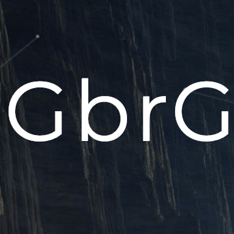

The Larch
About
How you are lured by your social media app everyday into spending.
Learn more >

tech
Code the Future
What is GbrG?
Learn more >
photography
Photo Matter
Featuring
The ha.wa.
View more >
How you are lured by your social media app everyday into spending
Gone are those days when manufacturers and E-commerce companies simply post items over the website and expect customers to simply search, click and buy. Now it is more than that, we live in a world where algorithm tracks our internet usage behaviour, recommends us products, offers us discount and do so much more. A question rises though, how come these tech companies are allowed to manipulate us using our own personal information. Is it that this is the only way how things are to go on, is it the internet way of selling off their products, algorithms replacing a sales person where the individual would do the same if I were to walk physically into a store. But internet is not the same as walking into a brick and motor store, is it! We are always equipped with digital devices, which easily lets us access to any app or website within few taps and clicks of our finger. The process is so seamless, that a Facebook post of your friend who has posted an image of her newly bought T-shirt, might influence you to give away your time to using Facebook, and next thing you know, a link had taken you to another E-commerce website, and if that was less you are already now subscribed to notifications from that page, and had checked out their Instagram page, concluding by following their Instagram account. These companies know for a fact, it is not just broad audience that they have access to, but many platforms interlinked with each other, the more ads the higher the probability of converting sales.
This is not an old story, we all probably know all this had been already happening to us since TV advertisement was invented, It's not like we all ask for ads commercial between our movies or series, but we all bear it, its designed to bring the submissive in us. It just so happened that, the game of advertisement had level up. Now it won’t be fair if i say, i speak for the entire mass, there are the groups of people who won’t mind Ads, popping up in middle of their movies or any show, but then there will be people who despise all these sleazy trick used by companies to buy their products, which i personally i call the system of “Lure”.
For people who are okay with unwanted cold calls, messages or unwanted marketing email, for those you are probably doing just fine, but for those who are against it, following are few steps you can take to dodge it:
Don't give out your number to the cashier, after making a purchase in any store.
If you bought something online, voluntarily unsubscribe to opt out from their marketing emails. Start blocking numbers which is unknown and unwanted marketing text.
Best way to eliminate all these would be to not use social media app or sites. Live your life basically.
Now many of you might point out that the me as an anti-internet or social media hater, but i am not, as i said before here in the article i speak for those who is against companies who sell off your data, commit fraud in our backs without any consent of ours. What i wish for is more of new tech companies who if runs a social media app, then be more like people connecting app then ad marketing platform.
Code the future.
Why Learn to code.
What is GBrg.
We are a part of a generation, where we fly to Mars in search of water, dreaming of new colonisation, A part of era where companies like SoftBank invest heavily on creepy robotics research company like Boston dynamics and where AI drives our car, safely taking us point A to B. I can go on and on but let's get to the point on why coding is essential.
For aspiring “Tech Entrepreneur” like me and many you, it is inevitable to learn and understand the language of software to build our product. Most importantly because it demands you to think, solve problems and is the traits of any entrepreneurs. An entrepreneur is someone i personally believe, who knows in and out about his product, there is no way around it. There is no way you somehow had manage to create a tech-backed company, lets assume like an online delivery app and outsource the entire app building coding part to a 3rd Party, It is more like assuming, you have a company that sells clay pots, but you have never made a pot by yourself.
Turning a vision into reality. Founder of DropBox says understanding how to code, is like having super powers, And the irony is, most of these powers come for free and is all over the internet. Future is not far away where we will have automated AI robots who does our entire housekeeping, or drones that proactively deliver our package, we can imagine what leverage we would have understanding the code behind the tech that runs such futuristic products.
Even for job seekers, CTO of
Averon Media
“Bodh Ram” says “the reason of unemployment is not solely because of lack of Jobs, but mostly because people are unemployable”. Everybody wants the job, but nobody has the skills, he quotes. I bet you, to go to any site where you can search jobs, you will most likely end up, finding most of the job openings has something to do with software development or the employer is looking for someone who understands how to work on a particular software. My agenda here is not to tell you that ‘just because of higher package, pursue software development’, but for job seekers i would say if a high paying dream job is your goal, then learning about a technology, should not stop you. For which will take your job status to the next level.
Gbrg
is a edu-tech organisation, based in Pune, India. GbrG is on a mission to help people learn how to code, Individuals who would enrol will be mentored by mentors, who are highly trained on their subjects and best part is they hold years of real life experience. Gbrg do not offer “Learn programming in 30 days” scheme, but rather has realistic approach to their curriculum. As of now their curriculum include Full Stack Web Development, which has its own designed curriculum for both students and working class individuals. Another unique feature of GbrG is that not just Gbrg will assist anyone to learn how to code but even help out job seekers land their dream jobs. To know more about GbrG and their awesome way of learnings,
click here
to visit their website.